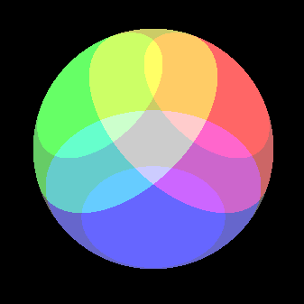
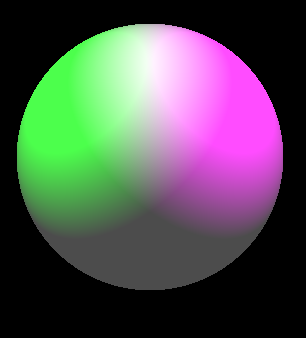
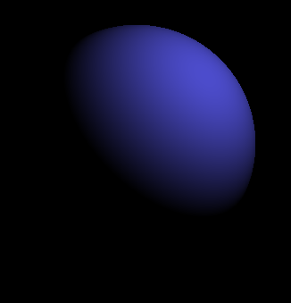
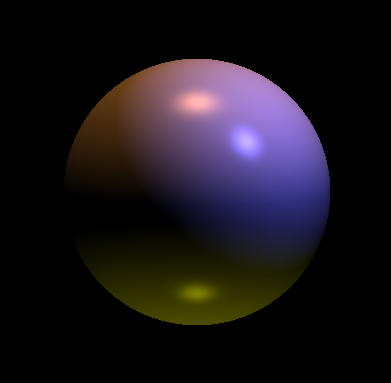

Demonstrates uniform and adaptive tessellation techniques, implemented using OpenGL and C++
Video demonstrating running program. First stage is uniform tessellation (./bezier teapot.bez .1) and second is adaptive tessellation (./bezier teapot.bez .01 -a)
Download Video (~7MB)
after -toon (command: -ka 0.3 0.3 0.3 -kd 1 1 1 -ks 1 1 1 -sp 64 -pl 2 2 2 1 0 0 -pl -2 2 2 0 1 0 -pl 0 -2 2 0 0 1 -toon)
before -invert (command: -ka 0.3 0.3 0.3 -kd 1 1 1 -ks 1 1 1 -sp 256 -pl 2 2 2 1 0 1 -pl -2 2 2 0 1 0)

after -invert (command: -ka 0.3 0.3 0.3 -kd 1 1 1 -ks 1 1 1 -sp 256 -pl 2 2 2 1 0 1 -pl -2 2 2 0 1 0 -invert)
before -greyscale (command: -ka 0.3 0.3 0.3 -kd 1 1 1 -ks 1 1 1 -sp 64 -pl 2 2 2 1 0 0 -pl 0 -2 2 0 0 1)

after -greyscale 1 (command: -ka 0.3 0.3 0.3 -kd 1 1 1 -ks 1 1 1 -sp 64 -pl 2 2 2 1 0 0 -pl 0 -2 2 0 0 1 -greyscale 1)

after -greyscale 0 (command: -ka 0.3 0.3 0.3 -kd 1 1 1 -ks 1 1 1 -sp 64 -pl 2 2 2 1 0 0 -pl 0 -2 2 0 0 1 -greyscale 0)

diffuse with single light (command: -kd 1 1 1 -pl 2 2 2 0.3 0.3 0.8)
specular with directional light (command: -ks 1 1 1 -sp 40 -dl 1 -1 4 0.3 0.3 0.8)

specular with point light (command: -ks 1 1 1 -sp 40 -pl 2 2 2 0.3 0.3 0.8)

specular and diffuse with point light (command: -ks 1 1 1 -kd 1 1 1 -sp 40 -pl 2 2 2 0.3 0.3 0.8)

specular and diffuse with multiple lights (command: -ks 1 1 1 -kd 1 1 1 -sp 40 -pl 2 2 2 0.3 0.3 0.8 -dl 0 -1 -.1 .5 .3 .1 -pl 0 -3 .3 .3 .3 0)
